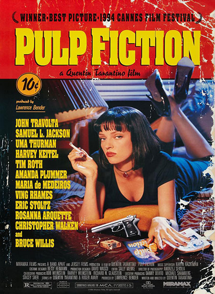

Pulp Fiction
The film interweaves three tales, told in a circular, fractured manner, which only fully connect by the time the final credits roll. The first story focuses on Vincent Vega (John Travolta) and Jules Winnfield (Samuel L. Jackson), two hit men on duty for "the big boss," Marsellus Wallace (Ving Rhames), whose gorgeous wife, Mia (Uma Thurman), takes a liking to Vincent. In the second, a down-and-out pugilist (Bruce Willis), who is ordered to take a fall, decides that there’s more money in doing the opposite. The final chapter follows a pair of lovers (Amanda Plummer and Tim Roth) as they prepare to hold up a diner.